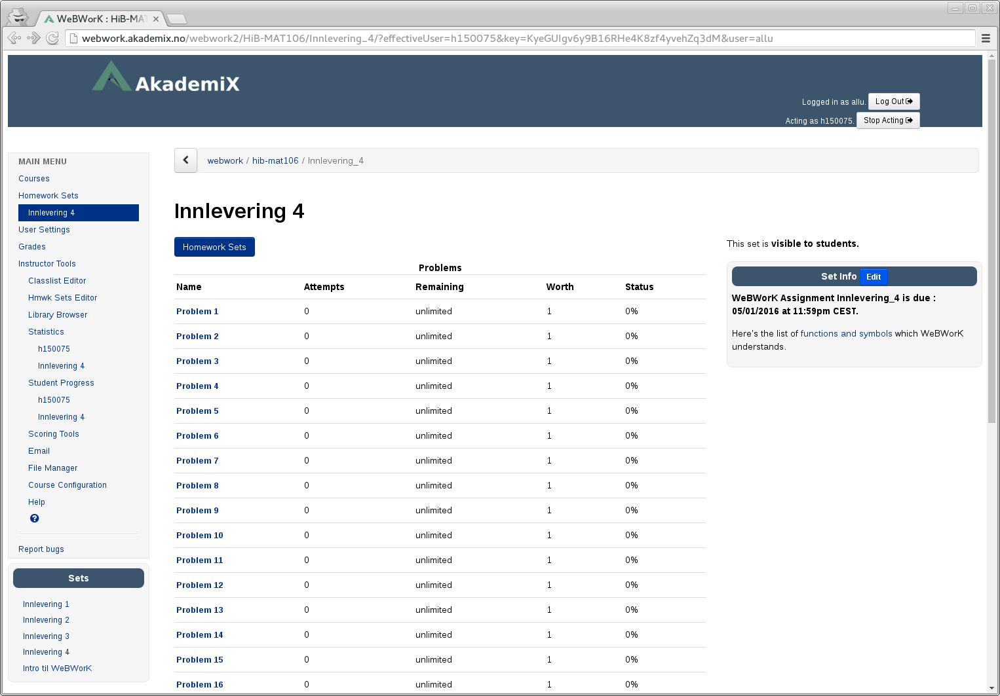
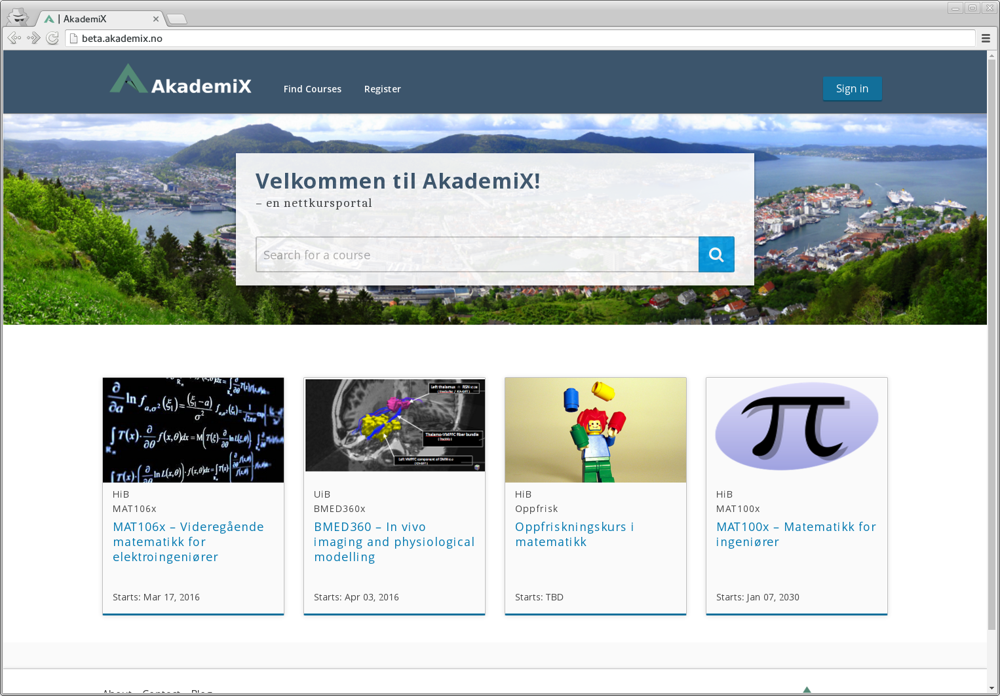
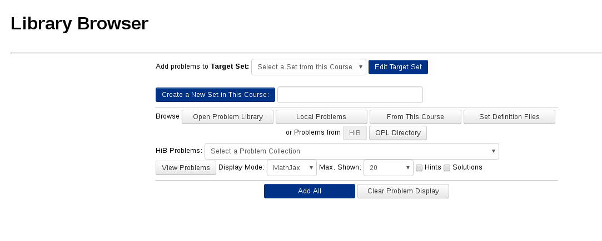
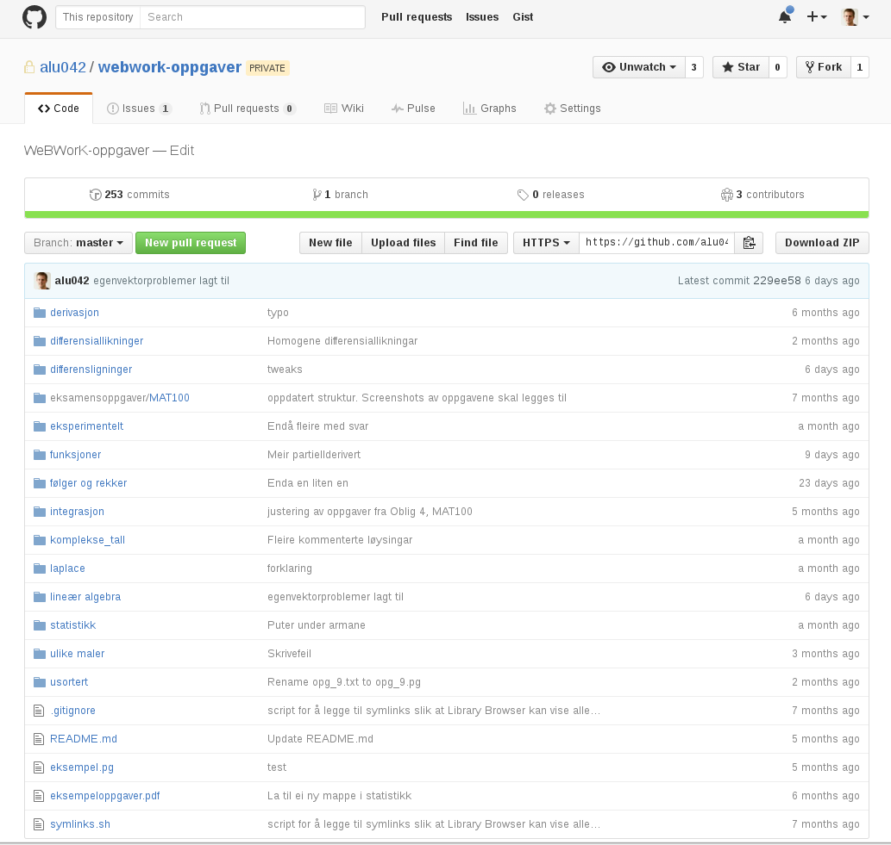
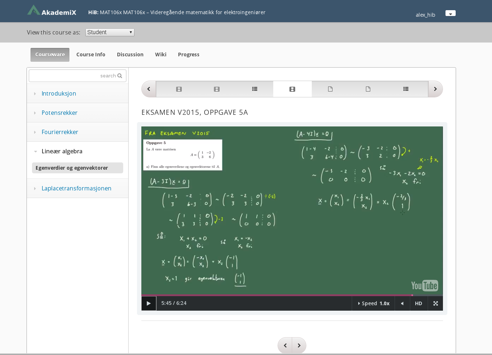
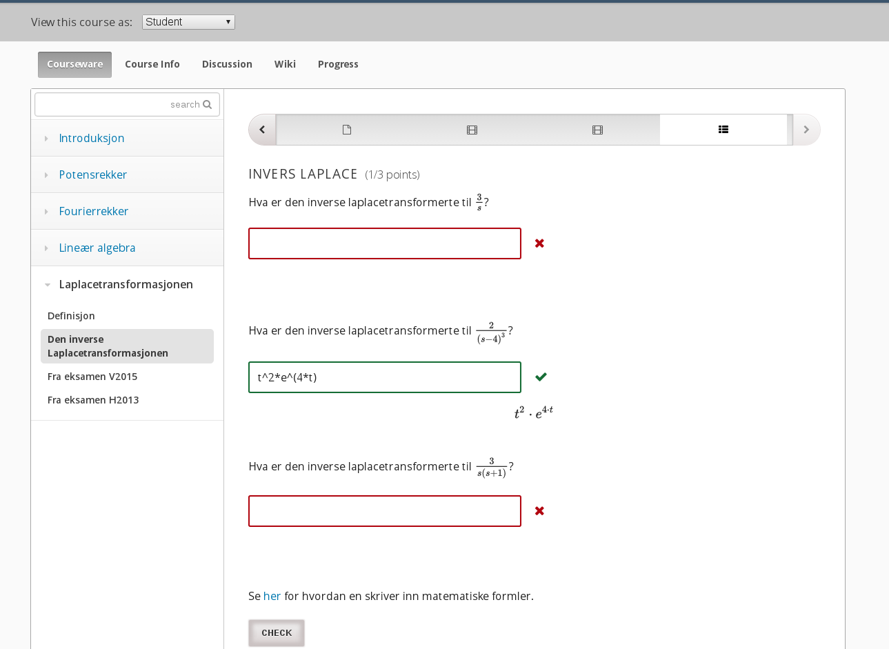
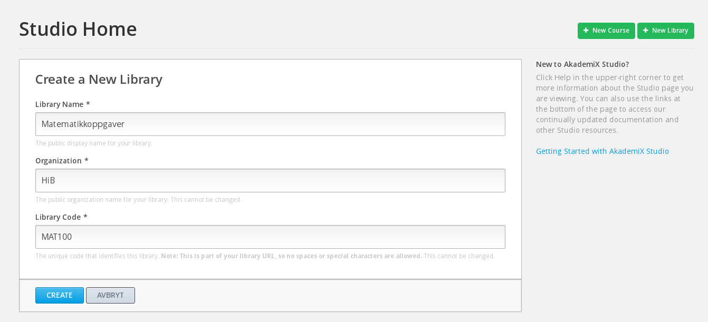

Alexander Lundervold
Department of Computing, Mathematics and Physics, HiB
Currently piloting two elearning solutions for some of our maths courses at HiB:
- WeBWorK instance (CAA)
- an Open edX instance (videos and CAA)
 
WeBWorK
An open-source online homework system built by MAA http://webwork.maa.org/{kind=link}
Used for obligatory assignments and voluntary exercises
Can be used for a broad range of problems
Much more than multiple choice!
Students forced to do actual calculations
Immediate feedback. Problems are automatically corrected
Students can get hints based on answer
Instructor solutions


Attempted answers give insight into thought process
if prob_1 not correct, go to prob_1.1. Else prob_2


{kind=link}

{kind=link}
Summary
- Still just a pilot. Only used in a few courses.
- Able to give many more obligatory exercises than if written (don't tell the students!)
- Feedback from students very positive
Open edX
An open-source MOOC platform built by (among others) MIT and Stanford University. Powers edX.org
{kind=link}

{kind=link}
Students are able to watch and rewatch examples as many times as they like
Can slow down or speed up the videos
Tracking: Number of times watched; number of attempts at exercises

{kind=link}

{kind=link}
Much more difficult: designing the actual content